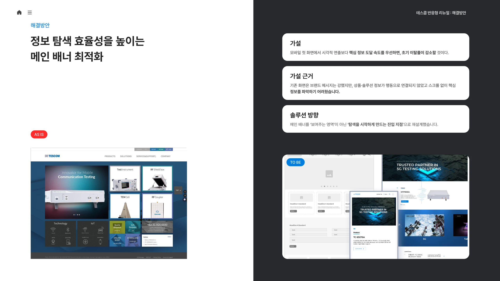

02 설계 과제
디바이스가 달라도 제품 정보의 위계와 탐색 흐름을 유지할 필요가 있었습니다.
01
낮은 모바일 사용성
고정형 화면 때문에 작은 디바이스에서 정보 탐색이 어려웠습니다.
02
탐색 진입점
메인 화면에서 제품·솔루션 정보로 이어지는 진입점을 정리할 필요가 있었습니다.
03
제품 이해 장벽
기술 중심 설명만으로 제품의 용도와 차이를 파악하기 어려웠습니다.
PROJECT 04 · RESPONSIVE WEB · UI RENEWAL
PC 중심의 제품 사이트를 모바일·태블릿·데스크톱에서 살펴볼 수 있도록 제품·솔루션 탐색 구조와 반응형 UI를 디자인했습니다. 화면 크기에 맞춰 제품 분류와 목록의 배치를 조정했습니다.
"디바이스별로 일관된 제품 탐색 구조 설계"

CASE AT A GLANCE
제품·솔루션 탐색과 반응형 UI의 설계 결과입니다. 이탈률이나 문의 전환의 변화는 측정 성과로 제시하지 않습니다.
01 프로젝트 배경
PC 중심의 고정형 웹은 모바일에서 정보가 잘리거나 우선순위가 흐려졌습니다. 솔루션과 제품 정보를 사용자의 탐색 목적에 맞게 재구성하고, 같은 정보 구조가 모든 화면에서 자연스럽게 이어지도록 반응형 규칙을 만들었습니다.
02 설계 과제
고정형 화면 때문에 작은 디바이스에서 정보 탐색이 어려웠습니다.
메인 화면에서 제품·솔루션 정보로 이어지는 진입점을 정리할 필요가 있었습니다.
기술 중심 설명만으로 제품의 용도와 차이를 파악하기 어려웠습니다.
03 문제 재정의
오래된 웹사이트의 화면을 새롭게 리뉴얼
디바이스별 탐색 구조와 제품 정보의 우선순위를 함께 정리할 필요가 있었습니다.
화면 교체가 아니라 어떤 디바이스에서도 솔루션을 이해하고 제품을 찾는 탐색 경험으로 정의했습니다.
04 설계 결정
제품명이 아니라 해결하려는 테스트 목적에서 탐색을 시작하도록 했습니다.
메인 배너에서 제품·솔루션 정보 탐색을 시작하도록 진입점을 구성했습니다.
화면 크기에 따라 제품 목록과 콘텐츠의 배치를 조정했습니다.
05 설계 화면과 흐름
설계 자료

06 설계 결과
솔루션 정보 구조화 · 디바이스별 탐색 경험 연결 · 정량 성과 별도 검증 필요
07 회고
같은 정보를 작은 화면에 옮길 때도 제목과 제품 탐색 진입점의 순서를 유지하도록 구성했습니다.
모바일에서 제품 정보를 찾고 문의까지 이동하는 과업을 확인해, 멈추는 구간부터 보완하겠습니다.